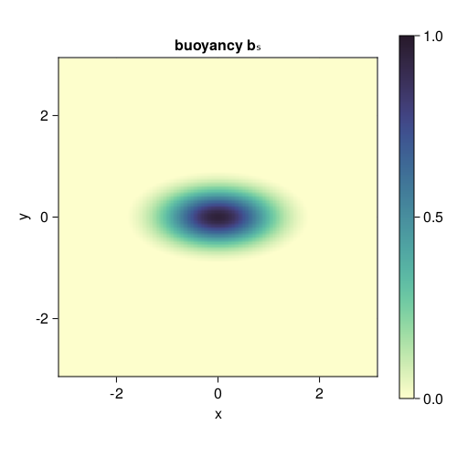
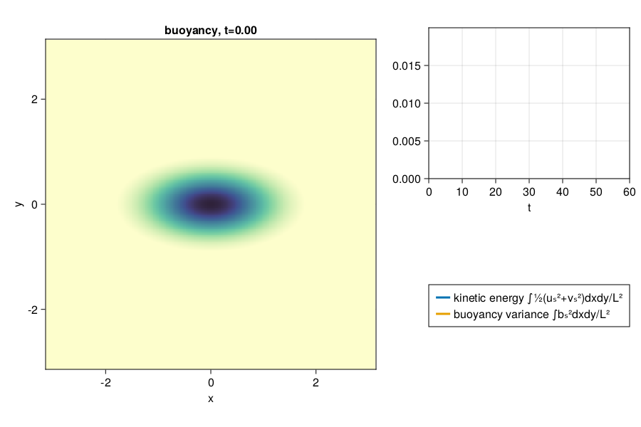
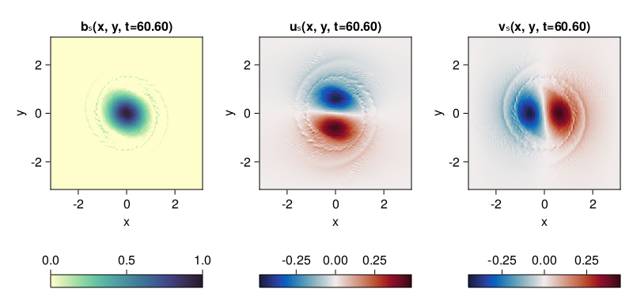

Decaying Surface QG turbulence
A simulation of decaying surface quasi-geostrophic turbulence. We reproduce here the initial value problem for an elliptical vortex as done by Held et al. (1995).
An example of decaying barotropic quasi-geostrophic turbulence over topography.
Install dependencies
First let's make sure we have all required packages installed.
using Pkg
pkg"add GeophysicalFlows, CairoMakie"Let's begin
Let's load GeophysicalFlows.jl and some other packages we need.
using GeophysicalFlows, CairoMakie, Printf, Random
using Statistics: mean
using Random: seed!Choosing a device: CPU or GPU
dev = CPU() # Device (CPU/GPU)Numerical parameters and time-stepping parameters
n = 256 # 2D resolution = n²
stepper = "FilteredETDRK4" # timestepper
dt = 0.03 # timestep
tf = 60 # length of time for simulation
nsteps = Int(tf / dt) # total number of time-steps
nsubs = round(Int, nsteps/100) # number of time-steps for intermediate logging/plotting (nsteps must be multiple of nsubs)Physical parameters
L = 2π # domain size
ν = 1e-19 # hyper-viscosity coefficient
nν = 4 # hyper-viscosity orderProblem setup
We initialize a Problem by providing a set of keyword arguments. We use stepper = "FilteredRK4". Filtered timesteppers apply a wavenumber-filter at every time-step that removes enstrophy at high wavenumbers and, thereby, stabilize the problem, despite that we use the default viscosity coefficient ν=0.
prob = SurfaceQG.Problem(dev; nx=n, Lx=L, dt, stepper, ν, nν)Let's define some shortcuts.
sol, clock, vars, params, grid = prob.sol, prob.clock, prob.vars, prob.params, prob.grid
x, y = grid.x, grid.y
Lx, Ly = grid.Lx, grid.LySetting initial conditions
We initialize the buoyancy equation with an elliptical vortex.
X, Y = gridpoints(grid)
b₀ = @. exp(-(X^2 + 4Y^2))
SurfaceQG.set_b!(prob, b₀)Let's plot the initial condition. Note that when plotting, we decorate the variable to be plotted with Array() to make sure it is brought back on the CPU when vars live on the GPU.
fig = Figure(resolution = (500, 500))
ax = Axis(fig[1, 1],
xlabel = "x",
ylabel = "y",
aspect = 1,
title = "buoyancy bₛ",
limits = ((-Lx/2, Lx/2), (-Ly/2, Ly/2)))
hm = heatmap!(ax, x, y, Array(vars.b);
colormap = :deep, colorrange = (0, 1))
Colorbar(fig[1, 2], hm)
fig
Diagnostics
Create Diagnostics; buoyancy_variance, kinetic_energy and buoyancy_dissipation functions were imported at the top.
B = Diagnostic(SurfaceQG.buoyancy_variance, prob; nsteps)
KE = Diagnostic(SurfaceQG.kinetic_energy, prob; nsteps)
Dᵇ = Diagnostic(SurfaceQG.buoyancy_dissipation, prob; nsteps)
diags = [B, KE, Dᵇ] # A list of Diagnostics types passed to `stepforward!`. Diagnostics are updated every timestep.Output
We choose folder for outputing .jld2 files and snapshots (.png files). Define base filename so saved data can be distinguished from other runs
base_filename = string("SurfaceQG_decaying_n_", n)"SurfaceQG_decaying_n_256"We choose folder for outputing .jld2 files and snapshots (.png files).
datapath = "./"
plotpath = "./"
dataname = joinpath(datapath, base_filename)
plotname = joinpath(plotpath, base_filename)Do some basic file management,
if !isdir(plotpath); mkdir(plotpath); end
if !isdir(datapath); mkdir(datapath); endand then create Output.
get_sol(prob) = prob.sol # extracts the Fourier-transformed solution
get_u(prob) = irfft(im * prob.grid.l .* sqrt.(prob.grid.invKrsq) .* prob.sol, prob.grid.nx)
out = Output(prob, dataname, (:sol, get_sol), (:u, get_u))Visualizing the simulation
We define a function that plots the buoyancy field and the time evolution of kinetic energy and buoyancy variance.
b = Observable(Array(vars.b))
ke = Observable([Point2f(KE.t[1], KE.data[1])])
b² = Observable([Point2f(B.t[1], B.data[1])])
title_b = Observable("buoyancy, t=" * @sprintf("%.2f", clock.t))
fig = Figure(resolution = (900, 600))
axb = Axis(fig[1:2, 1];
xlabel = "x",
ylabel = "y",
title = title_b,
aspect = 1,
limits = ((-Lx/2, Lx/2), (-Ly/2, Ly/2)))
axE = Axis(fig[1, 2];
xlabel = "t",
limits = ((0, tf), (0, 2e-2)))
heatmap!(axb, x, y, b;
colormap = :deep, colorrange = (0, 1))
hE = lines!(axE, ke; linewidth = 3)
hb² = lines!(axE, b²; linewidth = 3)
Legend(fig[2, 2], [hE, hb²], ["kinetic energy ∫½(uₛ²+vₛ²)dxdy/L²", "buoyancy variance ∫bₛ²dxdy/L²"])
fig
Time-stepping the Problem forward and create animation by updating the plot.
startwalltime = time()
record(fig, "sqg_ellipticalvortex.mp4", 0:round(Int, nsteps/nsubs), framerate = 14) do j
if j % (500 / nsubs) == 0
cfl = clock.dt * maximum([maximum(vars.u) / grid.dx, maximum(vars.v) / grid.dy])
log1 = @sprintf("step: %04d, t: %.1f, cfl: %.3f, walltime: %.2f min",
clock.step, clock.t, cfl, (time()-startwalltime)/60)
log2 = @sprintf("buoyancy variance: %.2e, buoyancy variance dissipation: %.2e",
B.data[B.i], Dᵇ.data[Dᵇ.i])
println(log1)
println(log2)
end
b[] = vars.b
ke[] = push!(ke[], Point2f(KE.t[KE.i], KE.data[KE.i]))
b²[] = push!(b²[], Point2f(B.t[B.i], B.data[B.i]))
title_b[] = "buoyancy, t=" * @sprintf("%.2f", clock.t)
stepforward!(prob, diags, nsubs)
SurfaceQG.updatevars!(prob)
endstep: 0000, t: 0.0, cfl: 0.639, walltime: 0.00 min
buoyancy variance: 1.83e-02, buoyancy variance dissipation: 1.28e-16
step: 0500, t: 15.0, cfl: 0.588, walltime: 0.06 min
buoyancy variance: 1.83e-02, buoyancy variance dissipation: 4.07e-11
step: 1000, t: 30.0, cfl: 0.571, walltime: 0.10 min
buoyancy variance: 1.83e-02, buoyancy variance dissipation: 5.59e-09
step: 1500, t: 45.0, cfl: 0.577, walltime: 0.15 min
buoyancy variance: 1.83e-02, buoyancy variance dissipation: 1.01e-08
step: 2000, t: 60.0, cfl: 0.574, walltime: 0.20 min
buoyancy variance: 1.82e-02, buoyancy variance dissipation: 1.12e-08
Let's see how all flow fields look like at the end of the simulation.
fig = Figure(resolution = (800, 380))
axis_kwargs = (xlabel = "x",
ylabel = "y",
aspect = 1,
limits = ((-Lx/2, Lx/2), (-Ly/2, Ly/2)))
axb = Axis(fig[1, 1]; title = "bₛ(x, y, t=" * @sprintf("%.2f", clock.t) * ")", axis_kwargs...)
axu = Axis(fig[1, 2]; title = "uₛ(x, y, t=" * @sprintf("%.2f", clock.t) * ")", axis_kwargs...)
axv = Axis(fig[1, 3]; title = "vₛ(x, y, t=" * @sprintf("%.2f", clock.t) * ")", axis_kwargs...)
hb = heatmap!(axb, x, y, Array(vars.b);
colormap = :deep, colorrange = (0, 1))
Colorbar(fig[2, 1], hb, vertical = false)
hu = heatmap!(axu, x, y, Array(vars.u);
colormap = :balance, colorrange = (-maximum(abs.(vars.u)), maximum(abs.(vars.u))))
Colorbar(fig[2, 2], hu, vertical = false)
hv = heatmap!(axv, x, y, Array(vars.v);
colormap = :balance, colorrange = (-maximum(abs.(vars.v)), maximum(abs.(vars.v))))
Colorbar(fig[2, 3], hv, vertical = false)
fig
Save
We can save the output at the end of the simulation by calling
saveoutput(out)This page was generated using Literate.jl.